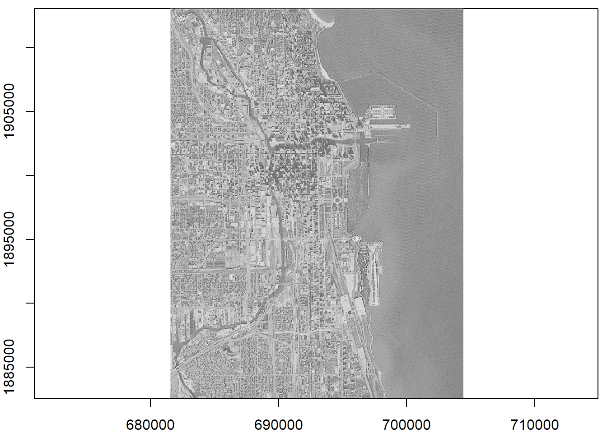
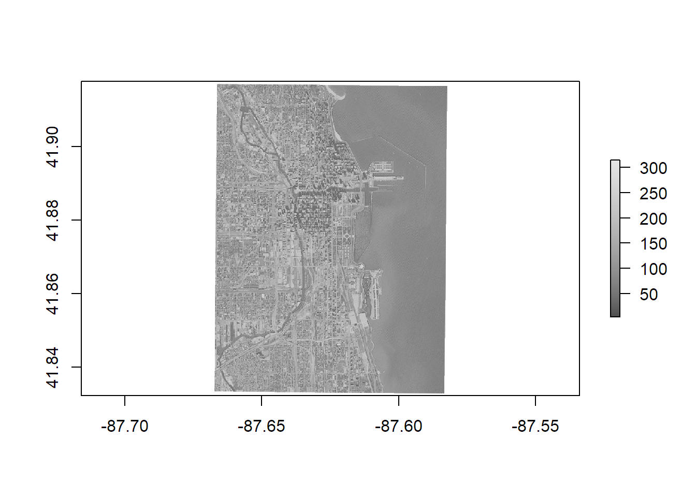

Download the GitHub repo.
Create a new R script in RStudio (File → New File → R Script).
Copy the questions below (all of which begin with the # character so RStudio will interpret them as a comment) into your script. Under each question, write R code. Run each line of R code as you enter it (press the Run button or ctrl+enter) to make sure it works.
Remember to save your script periodically to avoid losing work if RStudio crashes.
If you get stuck, click on the 'hint' link, or the question number to see the answer. Click again to hide.
If you have any questions or problems, please feel free to email the instructor.
##########################
#### IMPORT A GEOTIFF ####
##########################
# 1. Import the GeoTiff file SP27GTIF.TIF that comes with the rgdal package.
# View its properties.
library(raster)
img_dir <- system.file("pictures", package="rgdal")
img_fn <- file.path(img_dir, "SP27GTIF.TIF")
file.exists(img_fn)## [1] TRUEimg_rast <- raster::raster(img_fn)
print(img_rast)## class : RasterLayer
## dimensions : 929, 699, 649371 (nrow, ncol, ncell)
## resolution : 32.8, 32.8 (x, y)
## extent : 681480, 704407.2, 1882579, 1913050 (xmin, xmax, ymin, ymax)
## coord. ref. : +proj=tmerc +lat_0=36.66666666666666 +lon_0=-88.33333333333333 +k=0.9999749999999999 +x_0=152400.3048006096 +y_0=0 +datum=NAD27 +units=us-ft +no_defs +ellps=clrk66 +nadgrids=@conus,@alaska,@ntv2_0.gsb,@ntv1_can.dat
## data source : C:\Users\Andy\Documents\R\win-library\3.4\rgdal\pictures\SP27GTIF.TIF
## names : SP27GTIF
## values : 0, 255 (min, max)# 2. How many band(s) does this image have? What is the range of pixel values?
summary(img_rast)## Warning in .local(object, ...): summary is an estimate based on a sample of 1e+05 cells (15.4% of all cells)## SP27GTIF
## Min. 4
## 1st Qu. 78
## Median 104
## 3rd Qu. 152
## Max. 255
## NA's 0This image has only one band, with values from 4-255.
# 3. Plot the image with a gray scale colors.
image(img_rast, col=grey.colors(255), asp=1)
# 4. What is the resolution (size) of the pixels?
res(img_rast)## [1] 32.8 32.8# 5. What part of the planet is this image from?
img_rast_ll <- projectRaster(img_rast, crs=sp::CRS("+init=epsg:4326"))
plot(img_rast_ll, col=gray.colors(255))
The image is the Chicago waterfront.